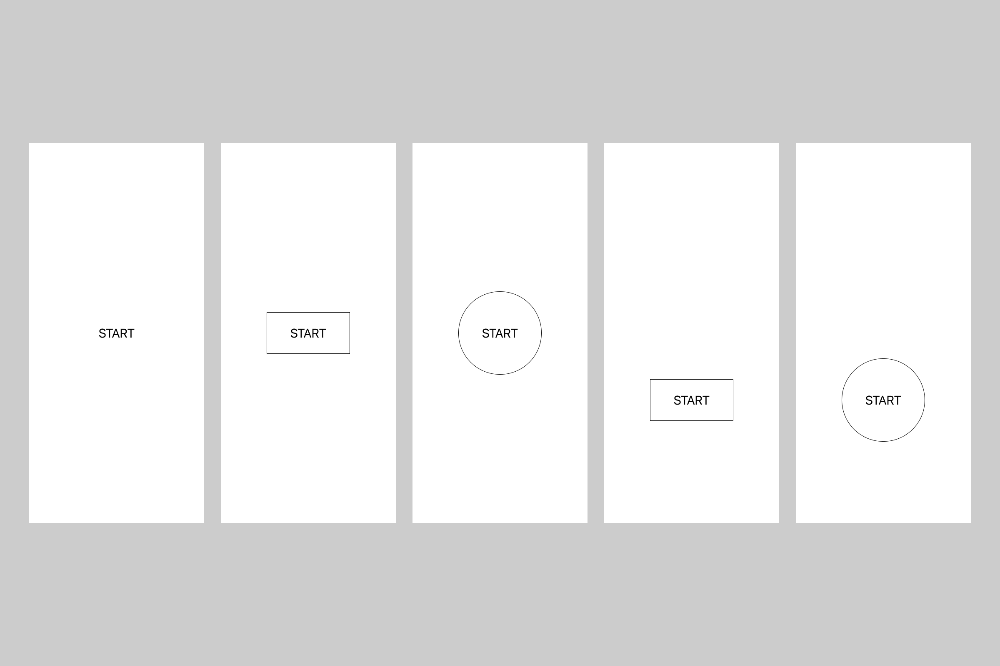
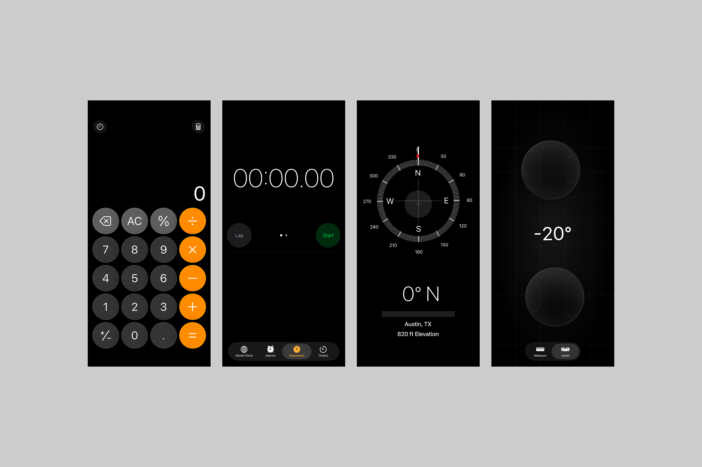

iRun
I like running. I don't do it often, but when I do, I'm not training for a marathon or trying to set a personal record. I just enjoy being outside, getting some sun, and moving my body.
One day last summer, I got ready for a run and realized my Apple Watch was dead, so I left it behind. That was the most enjoyable run I'd had in a while because I wasn't counting miles or looking down to check my pace. I was just moving.
Later, since I carried my phone with me on runs anyways, I downloaded a few running apps to see what experiences were already out there.
Current apps
I downloaded Nike Run Club, an app I'd used before, and Strava — two mainstream running apps, shown above, but I was immediately turned off by the social media-style home feeds, follow suggestions, training plans, leaderboards, challenges, clubs, and more. I even saw posts from people I didn't even know.
First of all, does a running app need five tabs? I don't want to scroll through a feed before going for a run. I just want to run. This is when I was struck by the idea to design my own running app.
While I appreciate that NRC at least defaults to showing the running screen every time you launch the app, I can't help but feel like these products have too much going on, so I wanted to reduce them to their simplest form and create a more personal, less data-driven running experience.
What do I want in a running app?
Call to action upon launching app
Emphasize movement over metrics
Visualize runs in a less conventional, more abstract way
Initial idea
I started by stripping the running experience down to its essentials. Here's a lo-fi version of my initial idea.
When you open the app, you immediately see a call to action. There should be no question about what the point of this app is. Launch it and go. Swiping right would show previous running activity, and a swipe left would show settings. Three screens, minimal interaction.
Once a run is initiated, I put the running experience in a card-style interface to indicate that you are in a separate, dedicated running mode.
Designing a screen with one button

Should the entire screen be tappable? Should the button be dead center or closer to the bottom for easier reachability? What shape should the button be? Is it going to morph into another UI element? Should there be a button at all? Okay, there should definitely be a button.
It's funny how difficult it is to make something simple.
The running experience
Earlier, I said that I don’t care much about metrics, but my initial idea still included one: time, distance, or pace. I explored showing it in a small font to keep the emphasis on movement. From there, I experimented with different font sizes, styles, and weights, as well as dark mode, to develop a visual identity.
Can a running app be a utility?

Inspired by the !Boring (Not Boring) suite of apps, I wanted iRun to feel like a simple utility: open it, start a run, and put your phone away. I also looked at Apple’s own utility apps, shown above. Their dark interfaces influenced my decision to give iRun a similar visual treatment.
The shape of a run
While exploring the running experience, I hit a wall and showed my progress to a friend. He asked, “If you don’t care about the numbers, why are you showing them?”
I realized I wasn’t being true to what sparked the idea in the first place, so I started exploring ways to visualize a run without showing stats. This was also when I began moving from lo-fi to hi-fi design.
Option 1: the solar gradient
Inspired by my favorite macOS dynamic wallpaper, Solar Gradients, I explored a gradient that changes with the time of day. This direction was also a chance to try Apple’s SF Pro Expanded Bold, a departure from the font styles I usually use.
During a run, an animated running figure replaces time, distance, and pace. The idea is to start a run, put your phone away, and just go. When you stop moving, the session pauses. When you end it, you see the current time, your route, and the gradient.
For anyone who still wants to see their stats, my idea was to send the data recorded during the run to the Fitness app.
The running figure is one of Apple's SF Symbols.
Option 2: the command-line interface
I just so happened to be rewatching Halt & Catch Fire while working on this project, and I was struck by an idea to design this app in a command-line interface style. Green text on a black background. I'm glad I spent time mocking it up because I absolutely love it.
After you start a run, the word RUNNING appears as if it’s being typed. The screen gives you little to focus on while your phone tracks the run in the background. When you stop moving, the session would pause automatically. When you end it, you see your route and the current time.
Tapping the activity button in the upper-left corner of the main screen would show your most recent run’s time, distance, pace, location, and weather. Earlier runs would be available in the Fitness app.
Option 3: the traffic light
I got this idea while stuck at a red light. Green while running, yellow while walking, red when you stop moving. I often alternate between running and walking, so I wanted the app to accommodate both. Stopping would prompt you to end the session. Movement is the method of interaction.
The decision
I’ve decided to move forward with the solar gradient option. I think it would be cool to look back on previous runs as a gallery of gradients and running routes rather than a list of metrics. Each run could become a visual record of where I went and the time of day I was out. That feels closer to what I wanted from the start: a way to celebrate being outside and moving my body.
Gallery view
WIP